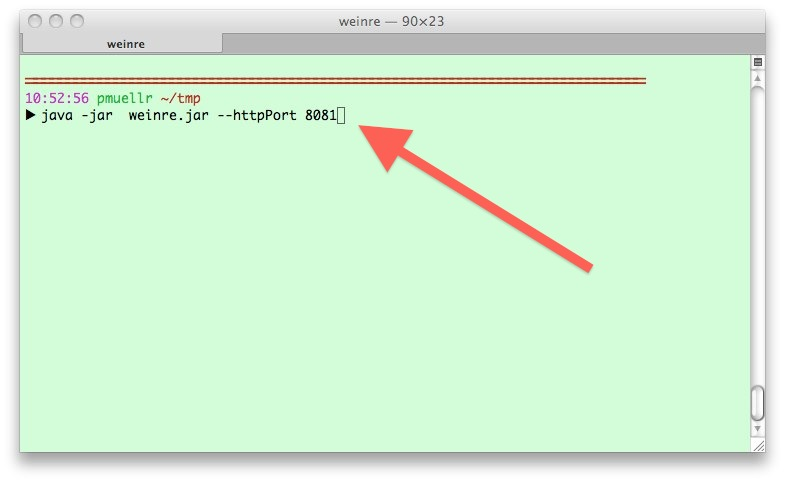
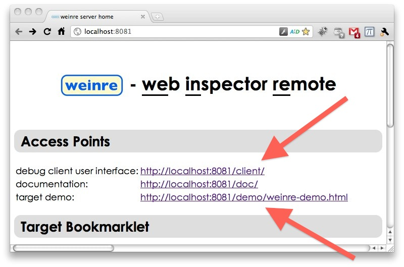
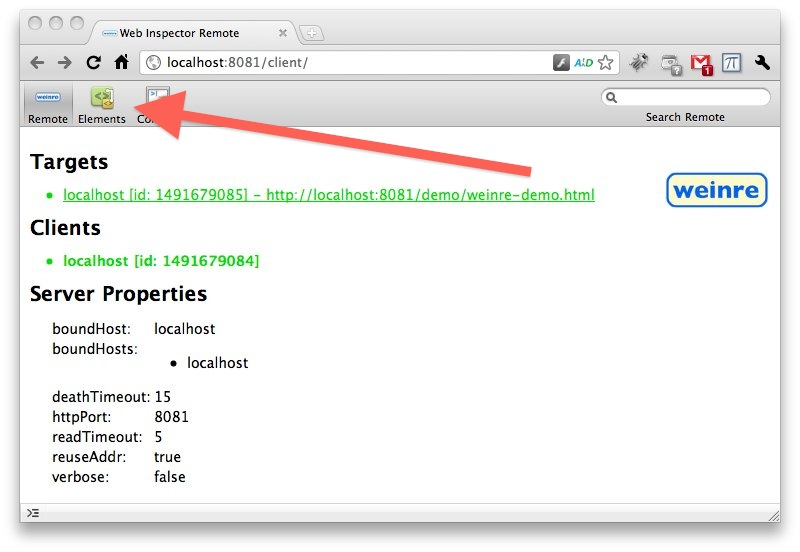
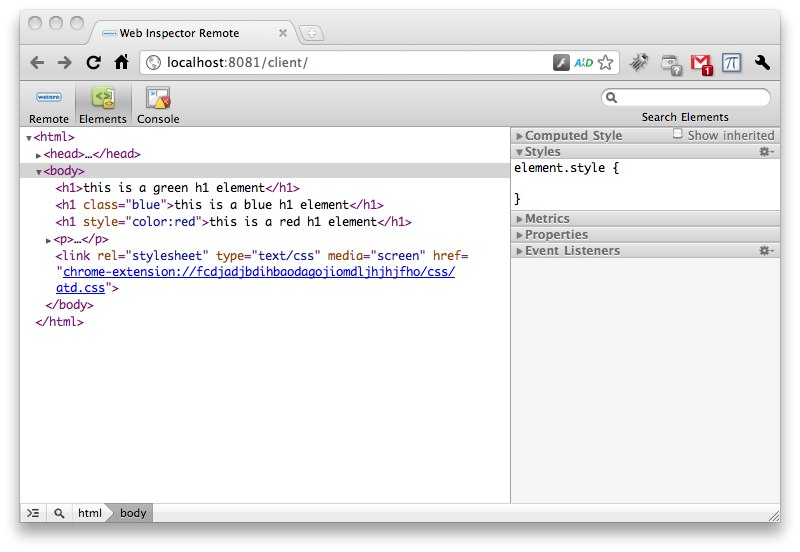
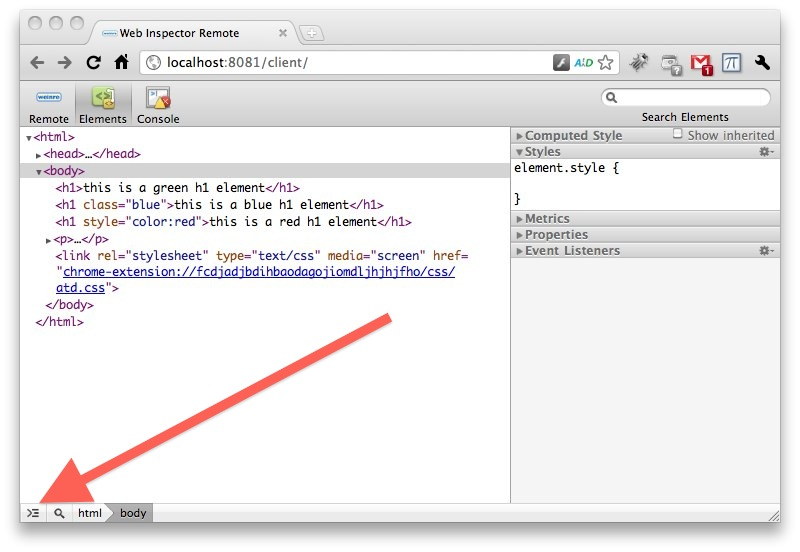

This page gives a walk through of using weinre to debug a sample page that is provided with weinre itself. Read this walk through first, then follow along and run weinre yourself to make sure it's installed and running correctly.
You may also want to check out the movie, which shows a walk through with the demo page.
NOTE: The images below are from a slightly older version of weinre and the demo page, but are close enough.
After you're done with the walk through, if you want to learn how to debug your own web pages with weinre, head to the Running page for more information.
The first thing to do is to start the weinre debug server. The debug server is a specialized HTTP server which is the middleman between the debug user interface, and your remote web page. Both the debug user interface and the remote web page will communicate via HTTP to the debug server.
The default configuration of the server is to only bind to localhost, so that the server can only communicate with clients running on the same machine. It shouldn't be possible for a browser on another machine to connect to this server. To debug a web page on a remote device (later), you'll need to bind to something other than just localhost. The default configuration is the safe one, and good enough to run this walk through.
To start the server, install the weinre.node server, then run the following command:
weinre -httpPort 8081

You should see some output in your console, like this:
If you see messages about "Address in use", that means that some other program is using port 8081, and so you'll need to use a different one.
Note that the server is now running. When you are ready to stop the server, kill the program with Ctrl-C or whatever.
Now, let's go to the server's home page, at http://localhost:8081/.
Note: weinre debug client is currently only supported in WebKit-based browsers, like Google's Chrome and Apple's Safari browsers. You can also use Internet Explorer if you have Google Chrome Frame installed.
It should look something like this (the red arrows were added to the image for emphasis):

The top arrow is pointing to a link to the debug client. This page is the Web Inspector user interface that you'll be using to debug. We'll click that link in a second.
The bottom arrow is pointing to a link to a debug target provided as a demo in the server. We'll click that link a little later.
Time to click the link for the debug client. Note that you probably want to open this page in another window (not just another tab, and not replacing this page). The link should be http://localhost:8081/client.
You should see the following page in your browser:

The page shown above is the Web Inspector user interface for the debugger. You should have landed on the "Remote" panel; there are tabs for three panels shown, at the top of the web page - "Remote", "Elements", and "Console".
The "Remote" panel provides information about what clients and targets are connected to the server, and other goodies.
The "Remote" panel is not included with the desktop browser's version of Web Inspector. But the other two panels, "Elements" and "Console" are the exact same panels from the desktop browser version of Web Inspector.
Right now, the "Remote" panel just shows one client connected. That's you! This web page, in particular.
OK, the debug client is running, so let's start a debug target. Go back to the tab or window with the server home page displayed (showing the two red arrows above).
Click on the link pointed to by the other red arrow, for the "target demo". The link should be: http://localhost:8081/demo/weinre-demo.html. Again, you probably want to open this page in another window (not just another tab, and not replacing this page).

The page shown above is the demo target. Pretty simple. Not much going on. And yet, it should have connected to the debug server. How would you know?
Let's check by going back to the debug client to see what it says.

You should now see that there's a target connected, as indicated by the entry in the Targets section. That's your demo page - you know because it shows the URL.
It's also green, meaning that a client is connected to it. That's you! The entry for your client also turned green, indicating that it's connected to a target.
The debug client will always attempt to connect to the most recently connected debug target. But you can also click on a target to explicitly switch to it.
Now what? Try clicking the Elements tab, as indicated by the red arrow below.

The Elements panel will be displayed, and you're now looking at the DOM of the demo page, as shown below.

Let's play with the console. Click the console expander, as indicated by the red arrow below.

The console is now open, as shown below.

What shall we do?
The first thing I always try is to execute the following line in the console:
document.body.style.background = "green"
Guess what that does?


Well, not much in this page. But check back at the page with the demo running on it.

Glorious!
Well, that's it, just to show you the basic operation. Explore a bit more, try reloading the debug target demo, and the debug client, etc, etc.
Are you ready to debug your own web pages? Head to the Running page for more information.